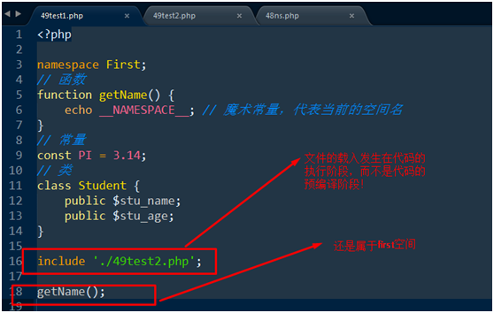

PHP-OOP5-day22（类的魔术方法、魔术常量、对象遍历，类型约束，类和对象的相关函数 ，命名空间）
一、魔术方法：名字由系统定义，而方法体由用户自己编写的方法！
最大特点是：不需要用户手动调用，而是当特定的情况发生时，系统自动调用相关的魔术方法！
注意：__autoload不算是魔术方法，但是其语法形式很类似于魔术方法！
类的魔术方法
__construct(),__destruct(),__clone(),__get(),__set(),__unset(),__isset(),__call(),__callstatic(),__sleep(),__wakeup()
__invoke()
当我们把对象当做一个函数（或方法）来调用的时候，会自动执行该魔术方法
之所以可以使用匿名函数$func闭包对象成功地调用函数，就是因为闭包对象里面有一个__invoke魔术方法
__toString()
当我们把一个对象当成是一个字符串来使用的时候，会自动的执行该模仿方法！
public function __toString(){ return serialize($this);}//返回值可以是该对象序列化成字符串的结果！
二、类的魔术常量
__LINE__ 文件中的当前行号
__TRAIT__trait的名称，trait是PHP实现代码复用的一种方法，类似于接口。（5.4开始支持）
__CLASS__：代表的是当前的类名！
注意与self的区别：例return new __CLASS__；是错误的，无法new
self是指该类的本身（一种结构，不仅仅包括类名），而__CLASS__只是一个类名（类名只是类的一部分！）
但是：$classname=__CLASS__; return new $classname;是可以new的，这里是可变类名的一种语法。
__METHOD__：代表当前的方法名！---在类里echo __METHOD__;//结果A::showCLassName
__FILE__文件的完整路径和文件名,
__DIR__文件所在的目录
__FUNCTION__函数的名称
__NAMESPACE__当前命名空间的名称
三、对象的遍历使用foreach语句！
对象的自定义遍历
- 对象的遍历受属性的访问控制的限制！
- 对象毕竟是有“生命力”的，可以自定义遍历！
对象的自定义遍历，就是指使用foreach遍历某一个类的对象的时候，可以在foreach的各个阶段，调用相应的自定义的方法来完成！
对象的自定义遍历，需要用到接口化编程 ，实现了一个名叫Iterator的系统预定义接口，那么我们在使用foreach遍历该类的对象的时候，就可以在foreach的各个阶段，调用相应的自定义的方法来实现！
Iterator里面有五个抽象方法：1current — 返回当前元素，2key — 返回当前元素的键，3next — 向前移动到下一个元素
4rewind — 返回到迭代器的第一个元素，5valid — 检查当前位置是否有效
header('Content-type:text/html;charset=utf-8'); //对象的自定义遍历
class Person implements Iterator{
private $position = 0;
public $a;
public $e = array(1,2,3,4,5);
// 返回到迭代器的第一个元素
public function rewind(){
$this->position = 0;
}
// 判断是否有效
public function valid(){
return isset($this->e[$this->position]);
}
// 返回值
public function current(){
return $this->e[$this->position];
}
// 返回键
public function key(){
return $this->position;
}
// 指针下移
public function next(){
$this->position++;
}
}
$obj = new Person;
foreach($obj as $k=>$v){
echo $k,'=>',$v,'<br />';
}//0=>1,1=>2...4=>5
四、类型约束
数组类型约束
就是强制的要求函数或者方法的形参是一个数组！---数组类型约束 （array 参数）
对象类型约束
就是强制要求函数的实参必须是某一个类的对象！---对象类型约束 （类名 参数）
五、类和对象的相关函数
class_exists()---例：var_dump(class_exists('A'));//bool(true)检查类A是否已定义
interface_exists()---例：var_dump(interface_exists('I_test'));//bool(true)
method_exists()---例：$obj=new A;var_dump(method_exists($obj,'f1'));//bool(true)
两个参数：第一个参数是对象变量,第二个参数是方法的名字
get_class():获得一个对象所属的类名！---参数一个对象
get_parent_class()获得对象或类的父类！---参数一个对象
get_class_methods()作用就是返回该类的方法！---参数是一个类，返回的是一个数组。
注意：在类外只能打印出公共方法，在类内可以打印出所有方法。
公开的静态方法和公开的非静态方法都可以被返回，但是无法返回受保护的和私有的方法名（在类外执行的时候）！
get_class_vars()函数的参数也只有一个，也是类名,能返回公开的属性！
is_object()判断一个变量是否为一个对象！
六、命名空间概述
一种用来将内存逻辑划分的功能，用来区分同名的类，函数和常量
1、基本语法：namespace 空间名字;
其中，空间的名字尊重基本标识符的命名规则（以字母、数字和下划线构成，不能以数字开头）
几点需要特别注意的地方：
1如果一个脚本的开始需要定义命名空间，则必须在脚本的最开始处定义！（例<?php ?>标签前不能有空格）
2一个脚本周期内，可以定义多个命名空间，并且不同的空间内可以定义相同名称的函数、常量和类！
2、空间成员
一个命名空间的内部可以有任意的PHP代码，但命名空间本身只“管辖”三种空间成员：常量、函数和类，其他的都不属于空间成员！例：变量不属于空间成员！
注意：命名空间内部除了空间成员（类、常量和函数）受限制之外，其他的代码都是该怎么执行就怎么执行，不存在任意的区别！
3、子空间
同计算机的目录可以存在子目录一样，内存中的空间可以存在子空间！
目录：A/B/C，其中，C就是B目录的子目录，而B又是A的子目录
空间：namespace A\B\C;其中空间C就是空间B的子空间，而空间B又是空间A的子空间（注意使用反斜杠\），
其表示的含义是创建了一个名字为C的子空间！并且A空间和B空间也一起创建了！
注意：子空间不能直接访问父空间的内容。因为它们只是逻辑上的划分。
4、空间成员的访问：注意使用\反斜杆
PHP提供了三种访问空间成员的方法：非限定名称方法、限定名称访问和完全限定名称访问！
1非限定名称访问
所谓的非限定名称访问，就是指在访问空间成员的时候，没有指定具体的空间的名字，我们前面的访问方式都是属于非限定名称访问！
2限定名称访问
就是从当前空间开始，访问其子空间的成员！
语法形式：子空间名\空间成员名-----例：namespace A\B; C\getName();
3完全限定名称访问
就是直接从根空间（类比网站根目录）开始绝对路径访问,优势就是，可以在任意的空间访问其他任意空间的成员！
语法形式：\空间1\空间2\……\空间成员，其中第一个\代表的是根空间！---例;namespace A\B\C;\A\B\sayHi();
5、空间引入
当一个脚本包含了另一个脚本的时候，就出现空间引入！也就是在一个脚本中引入了另外一个脚本的命名空间！

那么问题来了，如何访问空间Second里面的成员呢？
只能采用完全限定名称访问
6空间类的引入注意：include和空间类引入都不能少，否则找不到进不到对应空间。
所谓的空间类的引入就是指把其他空间的类引入到当前的空间，在当前自己的空间就可以使用这个类了！
方案一：通过完全限定名称访问
namespace Second;
$stu=new \First\Student;
var_dump($stu);
方案二：把First空间的类引入到自己的空间（Second空间）
语法如下：use 空间名\类名
//如果被引入的类的名字和当前空间原有的类的名字相同，就会出现冲突,通过起个别名解决。
use \First\Student as PHPstudent;//将First下面的Student类引入到当前的空间
$stu=new PHPstudent;//起了别名后直接使用别名
var_dump($stu);
7、全局空间
如果不给脚本定义命名空间，那么脚本中所有的内容（类、常量和函数）就都属于全局空间！
直接使用根空间访问全局空间的成员即可：语法为： \全局空间成员